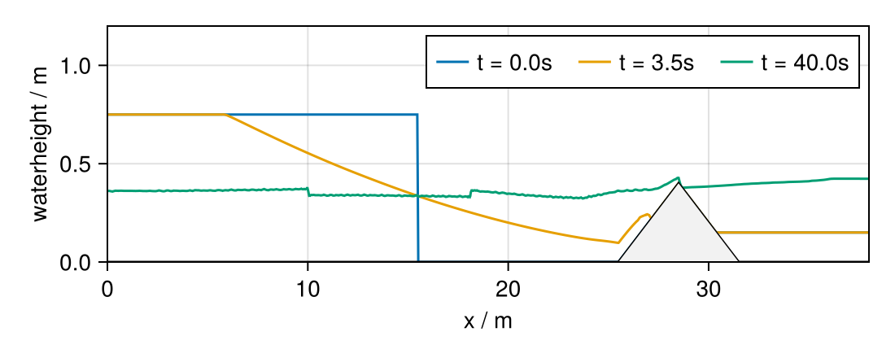
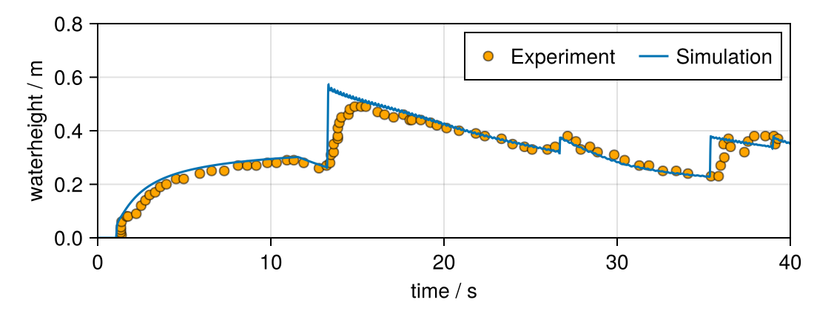

Dam break over triangular bottom topography
In this tutorial we will use the shallow water equations to simulate a dam break over triangular bottom topography with wetting and drying and compare the results to experimental data. The test case is based on a dam break experiment and has been discussed in:
- S. Gu et al. (2017) SWE-SPHysics Simulation of Dam Break Flows at South-Gate Gorges Reservoir DOI: 10.3390/w9060387
- J.G. Zhou, D.M. Causon, C.G. Mingham and D.M. Ingram (2004) Numerical Prediction of Dam-Break Flows in General Geometries with Complex Bed Topography DOI: 10.1061/(ASCE)0733-9429(2004)130:4(332)
The tutorial will cover:
- Set up a SWE solver for wet/dry transitions
- Create custom initial conditions and source terms
- Save solution data at gauge points
- Visualization with Makie.jl
Load required packages
Before we start, we need to load the required packages. Besides TrixiShallowWater.jl, we require Trixi.jl for the spatial discretization and OrdinaryDiffEqSSPRK.jl for time integration. In addition to that CairoMakie.jl is used for visualization and CSV.jl and DataFrames.jl will be used to load the experimental data.
Standard packages
using OrdinaryDiffEqSSPRKusing Trixiusing TrixiShallowWaterPackages for visualization
using CairoMakieusing DataFramesusing CSVPrepare and run the problem setup
In the first step we will set up the equation system. In this example we want to solve the one-dimensional shallow water equations, so we will use the ShallowWaterEquations1D and specify the gravitational acceleration to gravity = 9.812. In contrast to the ShallowWaterEquations1D type, this equation type contains additional parameters and methods that are needed to handle wetting and drying.
equations = ShallowWaterEquations1D(gravity = 9.812)┌──────────────────────────────────────────────────────────────────────────────────────────────────┐
│ ShallowWaterEquations1D │
│ ═══════════════════════ │
│ #variables: ……………………………………………………………… 3 │
│ │ variable 1: ………………………………………………………… h │
│ │ variable 2: ………………………………………………………… h_v │
│ │ variable 3: ………………………………………………………… b │
└──────────────────────────────────────────────────────────────────────────────────────────────────┘We then create a function to supply the initial condition for the simulation. Note, in the last step of this function the water height needs to be shifted by a small value to avoid division by zero.
function initial_condition_dam_break_triangular(x, t, equations::ShallowWaterEquations1D) b = 0.0 # Bottom topography h = 0.0 # Water height v = 0.0 # Velocity if x[1] <= 15.5 h = 0.75 # Water height in the left reservoir elseif 25.5 < x[1] && x[1] <= 28.5 b = (x[1] - 25.5) * 0.4 / 3.0 # Rising slope of the triangular bottom elseif x[1] > 28.5 && x[1] < 31.5 b = 0.4 - (x[1] - 28.5) * 0.4 / 3.0 # Falling slope of the triangular bottom end H = h + b # Total water height if x[1] > 28.5 H = max(H, 0.15) # Water height in the right reservoir end # It is mandatory to shift the water level at dry areas to make sure the water height h # stays positive. The system would not be stable for h set to a hard zero due to division by h in # the computation of velocity, e.g., (h v) / h. Therefore, a small dry state threshold # with a default value of 5*eps() ≈ 1e-13 in double precision, is set in the constructor above # for the ShallowWaterEquations and added to the initial condition if h = 0. # This default value can be changed within the constructor call depending on the simulation setup. H = max(H, b + equations.threshold_limiter) return prim2cons(SVector(H, v, b), equations)endinitial_condition = initial_condition_dam_break_triangular;As we want to compare the results to experimental data, we also need to account for bottom friction. For this we create a new source term, which adds a Manning friction term to the momentum equation.
@inline function source_term_manning_friction(u, x, t, equations::ShallowWaterEquations1D) h, hv, _ = u n = 0.0125 # friction coefficient h = (h^2 + max(h^2, 1e-8)) / (2 * h) # desingularization procedure return SVector(0.0, -equations.gravity * n^2 * h^(-7 / 3) * abs(hv) * hv, 0.0)endsource_term_manning_friction (generic function with 1 method)Now we can set up the DG approximation space. We use the discontinuous Galerkin spectral element method (DGSEM), with a volume integral in flux differencing formulation. For this, we first need to specify fluxes for both volume and surface integrals. Since the system contains nonconservative terms the fluxes are provided in form of a tuple flux = (conservative flux, nonconservative_flux). To ensure well-balancedness and positivity a reconstruction procedure is applied for the surface fluxes and a shock-capturing scheme with modified indicator function is used to compute the volume integrals.
volume_flux = (flux_wintermeyer_etal, flux_nonconservative_wintermeyer_etal)surface_flux = (FluxHydrostaticReconstruction(flux_hll_chen_noelle, hydrostatic_reconstruction_chen_noelle), flux_nonconservative_chen_noelle)basis = LobattoLegendreBasis(4)indicator_sc = IndicatorHennemannGassnerShallowWater(equations, basis, alpha_max = 0.5, alpha_min = 0.001, alpha_smooth = true, variable = waterheight)volume_integral = VolumeIntegralShockCapturingHG(indicator_sc; volume_flux_dg = volume_flux, volume_flux_fv = surface_flux)solver = DGSEM(basis, surface_flux, volume_integral)┌──────────────────────────────────────────────────────────────────────────────────────────────────┐
│ DG{Float64} │
│ ═══════════ │
│ basis: …………………………………………………………………………… LobattoLegendreBasis{Float64}(polydeg=4) │
│ mortar: ………………………………………………………………………… LobattoLegendreMortarL2{Float64}(polydeg=4) │
│ surface integral: ……………………………………………… SurfaceIntegralWeakForm │
│ │ surface flux: …………………………………………………… (FluxHydrostaticReconstructio…_nonconservative_chen_noelle) │
│ volume integral: ………………………………………………… VolumeIntegralShockCapturingHGType │
│ │ volume integral DG default: ……………… VolumeIntegralFluxDifferencing │
│ │ │ volume flux: ………………………………………………… (Trixi.flux_wintermeyer_etal,…onservative_wintermeyer_etal) │
│ │ volume integral DG blend: …………………… VolumeIntegralFluxDifferencing │
│ │ │ volume flux: ………………………………………………… (Trixi.flux_wintermeyer_etal,…onservative_wintermeyer_etal) │
│ │ volume integral FV: …………………………………… VolumeIntegralPureLGLFiniteVolume │
│ │ │ FV flux: …………………………………………………………… (FluxHydrostaticReconstructio…_nonconservative_chen_noelle) │
│ │ indicator: …………………………………………………………… IndicatorHennemannGassnerShallowWater │
│ │ │ indicator variable: ……………………………… waterheight │
│ │ │ max. α: ……………………………………………………………… 0.5 │
│ │ │ min. α: ……………………………………………………………… 0.001 │
│ │ │ smooth α: ………………………………………………………… yes │
└──────────────────────────────────────────────────────────────────────────────────────────────────┘Then the mesh is created using the TreeMesh type. The computational domain spans from coordinates_min to coordinates_max and is initialized with 2^8 = 256 elements on a non-periodic domain.
coordinates_min = 0.0coordinates_max = 38.0mesh = TreeMesh(coordinates_min, coordinates_max, initial_refinement_level = 8, periodicity = false)┌──────────────────────────────────────────────────────────────────────────────────────────────────┐
│ TreeMesh{1, Trixi.SerialTree{1, Float64}} │
│ ═════════════════════════════════════════ │
│ center: ………………………………………………………………………… [19.0] │
│ length: ………………………………………………………………………… 38.0 │
│ periodicity: …………………………………………………………… (false,) │
│ current #cells: …………………………………………………… 511 │
│ #leaf-cells: …………………………………………………………… 256 │
│ current capacity: ……………………………………………… 511 │
└──────────────────────────────────────────────────────────────────────────────────────────────────┘The semi-discretization object combines the mesh, equations, initial condition, solver, boundary conditions, and source terms into a single object. This object represents the spatial discretization of the problem and is complemented with the required time interval to define an ODE problem for time integration.
semi = SemidiscretizationHyperbolic(mesh, equations, initial_condition, solver, boundary_conditions = boundary_condition_slip_wall, source_terms = source_term_manning_friction)tspan = (0.0, 40.0)ode = semidiscretize(semi, tspan);Callbacks are used to monitor the simulation, save results, and control the time step. Below, we define several callbacks for different purposes.
AnalysisCallback
The AnalysisCallback is used to analyze the solution at regular intervals. Extra analysis quantities such as conservation errors can be added to the callback.
analysis_callback = AnalysisCallback(semi, interval = 5000, extra_analysis_errors = (:conservation_error,))┌──────────────────────────────────────────────────────────────────────────────────────────────────┐
│ AnalysisCallback │
│ ════════════════ │
│ interval: …………………………………………………………………… 5000 │
│ analyzer: …………………………………………………………………… LobattoLegendreAnalyzer{Float64}(polydeg=8) │
│ │ error 1: ………………………………………………………………… l2_error │
│ │ error 2: ………………………………………………………………… linf_error │
│ │ error 3: ………………………………………………………………… conservation_error │
│ │ integral 1: ………………………………………………………… entropy_timederivative │
│ save analysis to file: ………………………………… no │
└──────────────────────────────────────────────────────────────────────────────────────────────────┘Time Series Callback
The TimeSeriesCallback is used to extract time series data at a specific gauge location.
time_series = TimeSeriesCallback(semi, [(19.5)])┌──────────────────────────────────────────────────────────────────────────────────────────────────┐
│ TimeSeriesCallback │
│ ══════════════════ │
│ #points: ……………………………………………………………………… 1 │
│ interval: …………………………………………………………………… 1 │
│ solution_variables: ………………………………………… cons2cons │
│ output_directory: ……………………………………………… out │
│ filename: …………………………………………………………………… time_series.h5 │
└──────────────────────────────────────────────────────────────────────────────────────────────────┘Stepsize Callback
The StepsizeCallback calculates the time step based on a CFL condition.
stepsize_callback = StepsizeCallback(cfl = 0.5)┌──────────────────────────────────────────────────────────────────────────────────────────────────┐
│ StepsizeCallback │
│ ════════════════ │
│ CFL Hyperbolic: …………………………………………………… Returns{Float64}(0.5) │
│ CFL Parabolic: ……………………………………………………… Returns{Float64}(0.0) │
│ Interval: …………………………………………………………………… 1 │
└──────────────────────────────────────────────────────────────────────────────────────────────────┘All the defined callbacks are then combined into a single CallbackSet.
callbacks = CallbackSet(analysis_callback, time_series, stepsize_callback);Finally, we can go ahead an solve the ODE problem using a strong stability-preserving Runge-Kutta (SSPRK) method. The PositivityPreservingLimiterShallowWater is used as a stage limiter to ensure positivity of the water height during the simulation. The SSPRK43 integrator supports adaptive timestepping, but since we use a CFL-based time step we set (adaptive = false). For visualization purposes, we also use the saveat option to the solution at specific times.
stage_limiter! = PositivityPreservingLimiterShallowWater(variables = (waterheight,))sol = solve(ode, SSPRK43(; stage_limiter!); dt = 1.0, ode_default_options()..., callback = callbacks, adaptive = false, saveat = (0, 3.5, 40));
────────────────────────────────────────────────────────────────────────────────────────────────────
Simulation running 'ShallowWaterEquations1D' with DGSEM(polydeg=4)
────────────────────────────────────────────────────────────────────────────────────────────────────
#timesteps: 0 run time: 7.31000000e-07 s
Δt: 1.00000000e+00 └── GC time: 0.00000000e+00 s (0.000%)
sim. time: 0.00000000e+00 (0.000%) time/DOF/RHS: NaN s
PID: Inf s
#DOFs per field: 1280 alloc'd memory: 302.051 MiB
#elements: 256 device memory: 0.000 MiB
Variable: h h_v b
L2 error: 9.73019569e-03 0.00000000e+00 1.15014447e-05
Linf error: 3.55093396e-01 0.00000000e+00 3.92987526e-04
|∑U - ∑U₀|: 0.00000000e+00 0.00000000e+00 0.00000000e+00
∑∂S/∂U ⋅ Uₜ : -1.97004377e-01
────────────────────────────────────────────────────────────────────────────────────────────────────
────────────────────────────────────────────────────────────────────────────────────────────────────
Simulation running 'ShallowWaterEquations1D' with DGSEM(polydeg=4)
────────────────────────────────────────────────────────────────────────────────────────────────────
#timesteps: 5000 run time: 2.08395514e+00 s
Δt: 5.36347773e-03 └── GC time: 0.00000000e+00 s (0.000%)
sim. time: 1.96595521e+01 (49.149%) time/DOF/RHS: 6.21531880e-08 s
PID: 7.36179522e-08 s
#DOFs per field: 1280 alloc'd memory: 317.851 MiB
#elements: 256 device memory: 0.000 MiB
Variable: h h_v b
L2 error: 4.19039722e-01 1.44949071e-01 1.15014447e-05
Linf error: 5.78359913e-01 3.15368463e-01 3.92987526e-04
|∑U - ∑U₀|: 7.55506768e-14 7.29677093e-02 6.93889390e-18
∑∂S/∂U ⋅ Uₜ : -6.96048486e-03
────────────────────────────────────────────────────────────────────────────────────────────────────
────────────────────────────────────────────────────────────────────────────────────────────────────
Simulation running 'ShallowWaterEquations1D' with DGSEM(polydeg=4)
────────────────────────────────────────────────────────────────────────────────────────────────────
#timesteps: 8691 run time: 3.54815462e+00 s
Δt: 5.00910499e-03 └── GC time: 7.52550230e-02 s (2.121%)
sim. time: 4.00000000e+01 (100.000%) time/DOF/RHS: 6.18545396e-08 s
PID: 7.32350672e-08 s
#DOFs per field: 1280 alloc'd memory: 226.251 MiB
#elements: 256 device memory: 0.000 MiB
Variable: h h_v b
L2 error: 3.33916579e-01 1.33582677e-01 1.15014447e-05
Linf error: 4.17378531e-01 2.35879494e-01 3.92987526e-04
|∑U - ∑U₀|: 1.48936419e-13 1.07619576e-01 6.93889390e-18
∑∂S/∂U ⋅ Uₜ : -6.87112004e-04
────────────────────────────────────────────────────────────────────────────────────────────────────Visualization
After solving the ODE problem, we want to visualize the results. The first plot shows the water height over the spatial domain at different times. The second plot compares the simulation results to experimental data at a gauge point G4 located at $x=19.5\,\text{m}$.
Spatial plot
We first extract the solution data for each saved time using PlotData1D. This allows us to reformat the solution for visualization purposes.
pd_list = [PlotData1D(sol.u[i], semi, reinterpolate = false) for i in 1:length(sol.u)];Create a figure and axis for the spatial plot
f = Figure(size = (550, 550 / 2.5))ax = Axis(f[1, 1], xlabel = "x / m", ylabel = "waterheight / m", limits = (0, 38, 0.0, 1.2));Plot the water height at different time points
for (i, pd) in enumerate(pd_list) lines!(ax, pd.x, pd.data[:, 1], label = "t = $(sol.t[i])s")endAdd the bottom topography to the plot
lines!(ax, pd_list[1].x, pd_list[1].data[:, 3], color = :black, linestyle = :solid)band!(ax, pd_list[1].x, 0.0, pd_list[1].data[:, 3], color = :gray95); # Set color for bottom topographyAdd a legend to the plot
axislegend(ax, orientation = :horizontal)f
Time series plot
To validate the simulation, we now want to compare the results to experimental data. Therefore, We first download the experimental data for the first gauge location G4 from an external source and load it into a DataFrame format.
G4_data = Trixi.download("https://raw.githubusercontent.com/patrickersing/paper-2024-es_hydrostatic_reconstruction/refs/heads/main/code/DamBreakTriangularBottom/Reference/G4_Experimental.csv", joinpath(@__DIR__, "G4_Experimental.csv"))pd_G4 = CSV.read(G4_data, DataFrame);The simulation data at the gauge location has been saved to the time_series variable. To reformat the data for visualization, we use the PlotData1D function.
pd = PlotData1D(time_series, 1);Create a figure and axis for the comparison plot
f = Figure(size = (550, 550 / 2.5))ax = Axis(f[1, 1], xlabel = "time / s", ylabel = "waterheight / m", limits = (0, 40, 0.0, 0.8));Add experimental and simulation data to the plot
scatter!(ax, pd_G4.X, pd_G4.Y, color = :orange, strokewidth = 1, strokecolor = (:black, 0.5), label = "Experiment")lines!(ax, pd.x, pd.data[:, 1], label = "Simulation");Add a legend to the plot
axislegend(ax, orientation = :horizontal)f
This page was generated using Literate.jl.